revised 2006-06-09
Introduction
Installation
Application
basics
Configuration
Using
IssueManager
Browsing
and filtering issues list
Submitting
new issue
Browsing
issue details and responding
Updating
user's profile
Exporting
issues list
Configuring
the application
Managing
user accounts
Managing
issues
Managing
priorities and statuses
Managing
languages and styles
Issue Manager is a web-based application designed to help a workgroup keep track of issues and tasks via a shared central resource. The system was designed specifically with the IT department in mind, where quick access to shared data and history is a requirement, both from a internal organizational perspective, as well as to fulfill the needs of the customers.
The data is stored centrally on the server, which make it specially suitable for distributed teams who can use just the web browser to access it. No local software needs to be installed on the client and all web browsers are supported.
The application itself can be installed virtually on any web server, whether internal within the organization, or external, hosted by a web hosting company. Several distribution versions are provided, including ASP and C# for Windows servers and PHP for Linux servers. The distributions do not include any custom components and full source code is available for examination and customization.
Additionally, you are free to make design modifications and modify visual look, add own logo, etc. You may also remove, add or rename fields shown on the screen, provided you will handle them properly in the back-end code.
Application supports multiple language translations (with date formatting settings) switchable live and several predefined visual styles to apply. Both translations and styles lists can be expanded to support user's customized items.
After extracting distribution archive files into some web directory you may access it with your browser and installation process will be initiated automatically. First, specific requirements will be checked if the application may run on the server it is installed on.
Detailed installation steps and requirements are provided in INSTALLATION.txt file available in your application root directory after extracting archive contents.
When application first starts after installation (requirements checks and database setup) user is presented with a Login window. Before accessing the application every user must authenticate.
Just after installation there is a single administrator account in the database. The login and password to that account has been specified during installation process.
Depending on the installation options selected other user accounts may be available (sample database contains test accounts with login and password set to user's first name: janet, tom etc.).
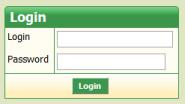
After successful login the main application working screen appears. it contains several titled sections described shortly below.
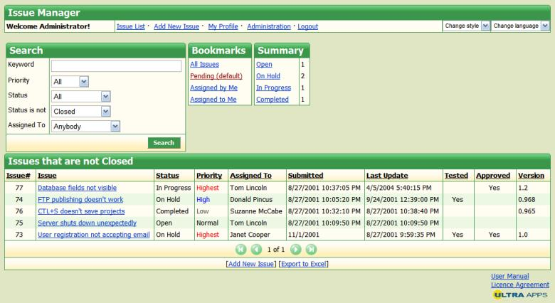
|
Section |
Contents |
|---|---|
|
Issue Manager |
This top window section spans
whole browser window width and contains application title,
current user indication and several navigation
components.
This section is shared by all pages of the application. |
|
Search |
Search form serves for filtering Issues List presented below with several criteria including text search, assignee and attribute matching. |
|
Bookmarks |
Bookmarks section list some most commonly used issue views. Clicking a link in this section is equivalent to executing described filtering. |
|
Summary |
Summary section lists number of issues grouped by status matching current filtering criteria. Clicking status name filters issues only with specified status. |
|
Issues... |
The most important section on the main page is a list of issues matching current filtering criteria. The grid's title indicates current filtering criteria. The grid features also page navigator and sortable column headers. This section will be further referred as Issues List |
|
page footer |
Footer section has no specific borders or title, but contains UltraApps logo and links to User's Manual and License information. This section is shared by all pages of the application. |
Application configuration is available through System Configuration page available in the Administration section. Please note that Administration link and configuration page is only available for administrators (users with Security Level=3).
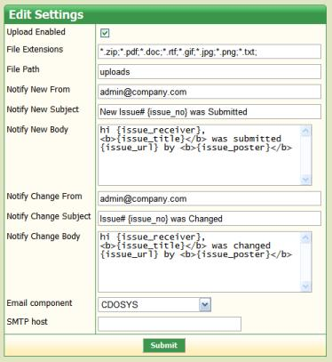
Edit Settings form contains various configuration settings that customize how the application acts mainly in terms of attachment uploads and mailing. Each configuration setting is described in a table below:
|
Setting |
Description |
|---|---|
|
Upload Enabled |
Enables or disables file upload feature that allows to attach screenshots or other files to your issues and responses. This is a global override. When enabled administrator may still restrict some users not to upload any files. |
|
File Extensions |
List of semicolon-separated file masks marking usually file extensions that are accepted for issue attachments. User will not be able to attach files not matching the criteria. |
|
File Path |
Name of a directory uploaded files will be load into. You should specify a subdirectory name under your application's web directory. Make sure this directory is writable for user account running your server-side scripts. |
|
Notify New From |
Email address used to send new issue notifications from. |
|
Notify New Subject |
New assigned issue notification subject. The following matches
are substituted: |
|
Notify New Body |
New assigned issue notification body. The following matches
are substituted: |
|
Notify Change From |
Email address used to send changed issue notifications
from. |
|
Notify Change Subject |
Changed issue notification subject. The following matches are
substituted: |
|
Notify Change Body |
Changed issue notification body. The following matches are
substituted: |
|
Email component |
Mailing method that will be used to send email notifications.
Different server-side technologies offer different methods of
sending emails, so components choice may vary depending on
application's back-end technology. |
|
SMTP host |
Some mailing methods may support additional parameter for specifying external SMTP server address to send emails through. |
The Issues List presents basic information about selected issues. The data is presented using columnar grid showing: issue number, name, status, priority, assignee name, date submitted and last updated, additional boolean tested and approved flags plus version field.
The Issues List offers variety of navigation and filtering options, using which it is easy to find information users want and present it the way they want it.
How to sort data in the grid?
By default records in the issues grid are sorted by Last Update column descending. This means most recently updated issues are displayed at the top. Sometimes it is useful to sort data in the grid using another column. It is possible by clicking column caption text which is a link. Clicking it causes grid to sort its data using values in column clicked. A triangle appears to indicate non-default sorting criteria have been applied. It also indicates sorting direction. If user want reverse sorting order it is enough to click the column caption text link send time. Triangle order indicator switches direction.
|
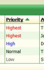 |
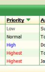 |
Images below show the appearance and contents of Priority column after clicking column caption for the first time, and then after following click.
How to filter data in the grid?
The Issues List by default presents list of all issues that are not Closed. IssueManager users may customize and filter grid contents using wide range of criteria. Filtering uses the Search form displayed above the grid. The form contains the following fields: Keyword for specifying text to match against issue name and description (only issues containing specified keyword in issue name or description are listed), Priority (only issues with selected priority are listed), Status (only issues with specified status are listed), Status is not (only issues with any status except selected are listed) and Assigned To (only issues assigned to specified user are listed).
Users may combine those elemental conditions and build complex search results such as: all issues containing “email” in name or description, with highest priority, status set to Bug and assigned to myself.
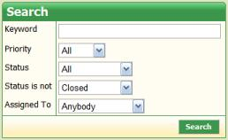
How to use bookmarks?
To simplify navigation to some most often used Issues List views IssueManager offers Bookmarks section. It contains 4 links to the most commonly used grid filterings. It is All Issues (all issues displayed including Closed issues), Pending (default) (issues that are not Closed). Assigned by Me (issues that have been assigned by the current user) and Assigned to Me (issues that have been assigned to the current user.
Clicking a link filters grid using specified criteria and is equivalent to executing some search on the Issues List. Bookmarks are especially useful to reset to the default view when after applying complex filtering (instead of resetting Search form fields and resubmitting).
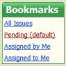
How to filter issues quickly by status?
The last from the sections displayed above Issues List is Summary section. It displays number of issues matching current search criteria with specific status set. Status names are listed (only ones that exist in the current Issues List) and number of issues with given status is shown beside.
Each status name listed is a link. Clicking it filters current grid results by status selected. It preserves other searching criteria in effect and is equivalent to selecting status in Search form's Status field and submitting.
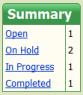
Users can submit new Issues to to system by clicking Add New Issue link that is always shown in the application header section or another one shown just below the main Issues List.
After clicking clicking the link Add New Issue form is displayed where the user enters Issue name, Description and selects various parameters regarding the issue, such as Priority and Status, Version of a product issue is concerned with as well as the user that will be Assigned To the issue.
Submitter may also upload an attachment related to the issue (such as screenshot, example data, code) using File field, but only the administrator has enabled file uploads in the System Configuration page and allowed the current user to upload files using Users administration section.
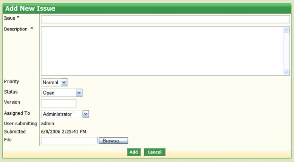
Existing issue details can be displayed after clicking issue name link in the Issues List. This view is called Issue Details and is composed of several sections. Each section has been described in the table below.
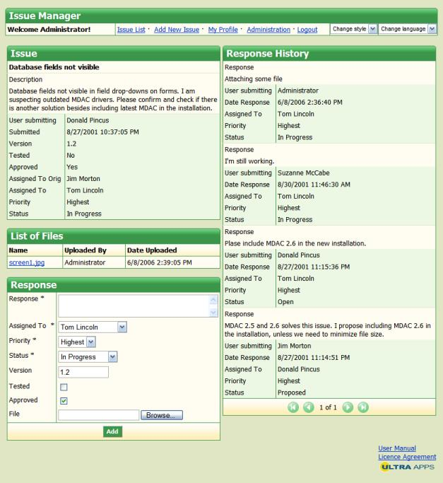
|
Section |
Contents |
|---|---|
|
Issue |
This section presents details of the current issue. This includes issue name and description, information about users assigned, submitting and originally assigned, submit date and other attributes as priority, status, version, tested and approved flags. All these fields are presented read-only and their values may only be updated submitting new response to the issue. |
|
List of Files |
This grid lists issue file attachments submitted when adding new issue or responding. If there are no attachments submitted the grid is hidden. If visible the list presents information about user submitting and upload time of each file. Users may click attachment file name to open or download attachment in new window. |
|
Response |
Response form is used to submit responses to the currently
displayed issue. Response includes similar fields to an issue
itself. Response attributes submitted alter values of the parent
issue attributes. It is also possible to submit new file
attachment when submitting issue response. Response text field
doesn't replace issue description, it is just saved in the
Response History section. |
|
Response History |
Response History section lists all responses made to the current issue. All values submitted including author, assignee, date, priority, status and response text are displayed for each issue. If there are too many responses pagination is possible using navigator below the list. |
Each logged in user may access several personalization options accessing My Profile link in the application header menu. Using Edit Profile form user may change own password for authentication (providing old password and new password repeated). Other options available configure user mailing settings: email address to send user's notifications to and 3 checkboxes to define which notification types will be sent to the current user (notification about being assigned new issue, about reassigning issue submitted by the user originally and about losing issue assignment).
Edit Profile form also includes read-only information about user's Security Level and if administrator has allowed the user file upload.
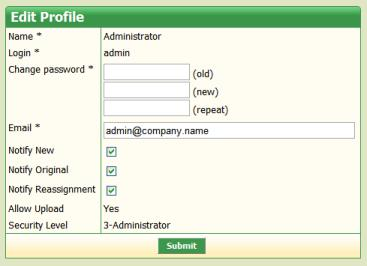
Changes
to the profile are applied after clicking Submit button. If
there are any issues with the data submitted validation errors are
displayed in red.
IssueManager offers simple export feature that converts currently displayed Issues List to a format that can be opened by Microsoft Excel.
To download export file user needs to click Export to Excel link available below Issues List grid (close to Add New Issue link). After clicking the link file download is detected by your browser and you user is able to save .xls file for opening with Microsoft Excel.
Export file produced by IssueManager contains the same data as currently displayed Issues List, but without any pagination (all records filtered are exported).
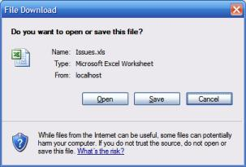
Administration section of the application is only accessible to application administrators. Only they see Administration link in the application header menu. Even if navigating using known URL normal IssueManager users will be rejected access and forced to log in using different account.
After clicking Administration link vertical menu appears listing items that are available for administrator to manage.
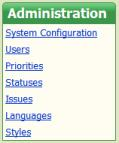
Once clicked on any menu link horizontal menu turns into vertical menu and is displayed under header top section along with any page in Administration section.
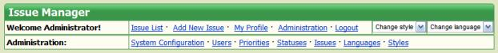
System Configuration page has been described in detail in Configuration section above.
Users management pages are available after clicking Users from Administration menu.
A grid lists user accounts configured in the application. The example below presents predefined user accounts available in the sample database.
Users grid lists user's Name column, Email, Security level and Allow Upload flag. The grid offers common sorting feature (clicking column caption text) and paginating (using navigator in the bottom).
To create new user account Add New User link located in the grid's bottom can be used. Administrator needs to fill User form at least specifying fields required.
To edit existing user account details or remove an account administrator needs to click a value from user Name column.
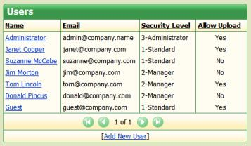
Clicking user's name navigates to the User details form. Administrator may configure user's login here, change password, select another security level, provide name and email and configure several boolean flags allowing user to upload and receive different types of notifications.
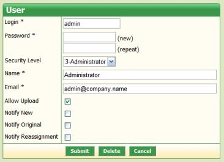
When adding new user account Add button is used to submit the data. When updating an account Submit button saves changes (provided they are valid), Delete removes user account permanently from database and Cancel button aborts any changes made and returns to the Users list.
IssueManager's Administration section contains Issues link which contains management section for issues, attachments and responses. The overall layout of the section is similar to the one used on Issues List, Issue Details and Response form, but Administrators in this section have more options modifying record values.
The main view of Issues Management section presents Search form similar to the one located on the main page and issues grid listing issues matching search criteria (keyword, priority, status, not status and assigned user).
This issues grid offers common list facilities as column sorting and paginating with bottom navigator. Clicking value from grid's Issue column navigates to the Issue Management page. Adding new issue is only possible from the user section of the application, not administration section. You are free to edit such issue once submitted.
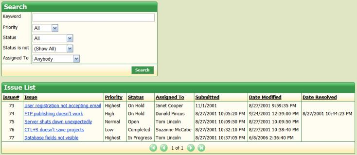
Issue Management page presents Issue Maintenance form using which administrator may update most from the issue fields. Changes are saved clicking Submit button and Cancel button navigates back to the Issues Maintenance. Administrator may also remove duplicated, no longer needed or invalid issue using Delete button. All file attachments and responses are also deleted after removing parent issue.
Issue Management page also lists issue's file attachments in the List of Files grid (sortable, paginable. Clicking file name link in this grid navigates to the File Maintenance page described below.
The last page component is Response History section listing all responses made to the edited issue. Most information about each response is presented in the list, but clicking Edit link below each issue brings administrator to the Response Maintenance page described below.
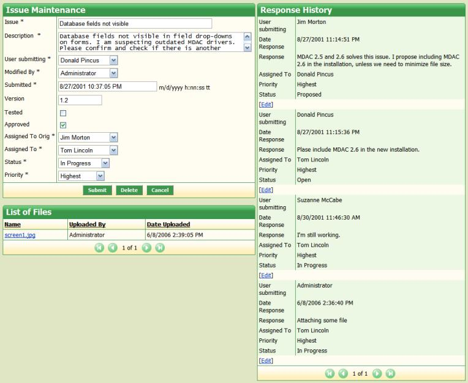
File Maintenance form is used to edit issue attachment details including date and user uploaded and file itself. Clicking the first link in this form opens pop-up window for browsing or downloading attached file. A new file can be uploaded using file upload control (removing existing file). As always Submit button saves changes made, Cancel returns to the parent issue details and Delete button deletes attachment record permanently from database and removes uploaded file from disk.
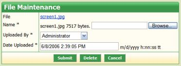
Response maintenance form displays for editing fields of selected response. Responses are always child records to some issue, submitting new response modifies some of the attributes of the parent issue. Maintenance form contains fields for choosing submitter and assigned users as well as response date. Other fields include response status and priority and textual response description. As always Submit button saves changes made, Cancel returns to the parent issue details and Delete button deletes response record from database.
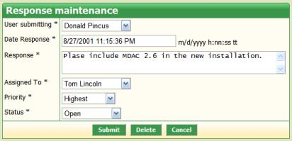
Priorities and statuses are important aspect of every project. Many managers customize list of available item of these types to apply organization policies or just customize IssueManager more to their personal needs.
With 3.0 version IssueManager became multilingual application so priorities and status needed to become easy to translate. IssueManager uses special res:translation format to indicate that given priority/status name needs to be extracted from current translation's dictionary. If you don't use multiple languages in your application specify priorities and statuses in formal textual format (without res: prefix).
Priorities management page contains both grid and details record form on a single page. By default Priority details form works in insert mode displaying Add and Cancel buttons. After filling priority information (name or name's translation, color to display priority with and ordering number) Add buttons appends new item to all listboxes used for selecting priority in the application.
Priorities grid lists all available priorities on both translated and untranslated form along with color and order specified for each item. Clicking priority caption link brings Priority form into edit mode with Submit button to apply changes. Add New Priority link in the grid's bottom (or clicking Cancel in the form) turns Priority form back to insert mode.
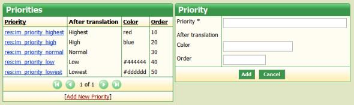
Statuses administrative section works in a similar manner. Status form works in insert mode by default. Clicking value from Statuses grid brings Status form into edit mode where changes can be saved using Submit button. Returning to insert mode is possible then clicking Add New Status link or Cancel button.
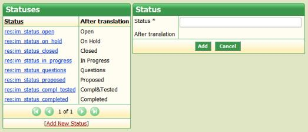
Version 3.0 of IssueManager brings multiple translations and visual styles selection. Switching both of those is possible selecting values from application header's listboxes (to the right). Those listboxes contain items that can be administered via Languages and Styles pages of Administration section.
It's important to note that in the 3.0 version of IssueManager these pages serve only to create new items in the header listboxes. No other steps are made to make new selection valid.
Administrator/developer customizing the application needs to follow several technology-dependent steps to create new translation or visual style. Documentation will be soon released helping customizing these items.
Both Styles and Languages pages present similar layout to Priorities and Styles pages. They both contain a grid listing listbox items and record form for either inserting new value or updating value selected for editing by clicking name link in the grid. Forcing record into insert state is possible clicking Add New link located in the grid's bottom.
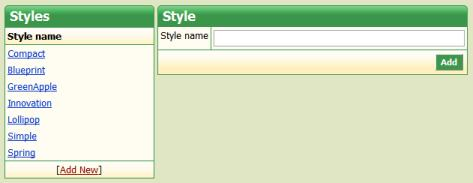
document revised 2006-06-09